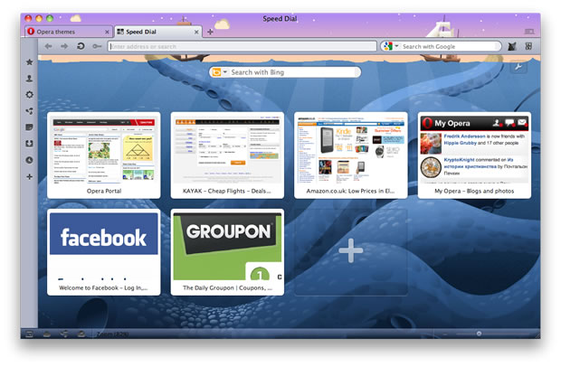

Temas ligeros de Opera
Introducción
Opera 12 nos trae muchas mejoras, incluyendo actualizaciones del sistema de temas. Para empezar, las actualizaciones son tan extensas que hemos cambiado el nombre de "pieles" a "temas". Hay un nuevo sistema de temas (mas liviano) que se encuentra en la parte superior del tema por defecto en Opera y hace que personalizar los temas (ligeros), sea mucho más fácil de lograr. En este articulo vamos a echar un vistazo de como funciona este nuevo sistema.
¿Cómo funciona?
Estos nuevos temas (ligeros) funcionan de la misma manera como el sistema de temas existente: Se empaquetan en un archivo ZIP que contienen dos cosas, los archivos que se utilizaran en el tema y un archivo persona.ini. El archivo .ini es como Opera reconoce que el archivo ZIP es un tema — cuando se encuentra con este tipo de archivo (p.e., mediante un enlace a ella), automáticamente se instalará el tema: "un proceso sencillamente agradable". El nuevo tema se aplicará sobre el tema predeterminado de Opera para su sistema operativo.
El archivo persona.ini contiene un numero de secciones, cada una comenzado por un título que figura entre corchetes, como p.e.: [Options]. Cada una de estas secciones contiene información especifica de diferentes partes del tema, tal como una imagen de fondo personalizada, entre otros, la clave aquí es la simplicidad — se puede seguir utilizando el antiguo sistema de temas (mas pesado) para crear una personalización completa si se desea, pero la mayoría de la gente solo quiere hacer algo simple y no quieren correr el riesgo de romper la interfaz de usuario. El nuevo sistema de temas (mas ligero) es mucho mas fácil de usar. En Opera 12 sólo se nos permite personalizar la imagen de fondo, el color y las partes principales de la interfaz de usuario por medio de una imagen de muestra. En un futuro se añadirán mas opciones.
En la siguiente sección vamos a ejecutar un tema de ejemplo para demostrar cómo funciona todo esto.
Aplicando un tema de ejemplo.
Para probar un tema de ejemplo, necesita instalar Opera 12 y dirigirse a nuestra pagina de temas para Opera. Una vez situado en la pagina, intente hacer clic en uno de los ejemplos y se dará cuenta que su navegador cambia su estilo para parecerse al siguiente:

Figura 1: Ejemplo de un tema en acción.
Encontrará este tema listado junto con cualquier otro tema que pueda haber instalado, en Opera > Aspecto. De estos, puede optar por seleccionar entre los diferentes temas que previamente ha instalado ó bien, eliminarlos. También puede hacer que un tema este disponible en el cuadro de diálogo de apariencia colocándolo en la carpeta skin ubicada dentro del directorio de Opera en su perfil. Puede encontrar este directorio, en los sistemas [home folder]/Library/OperaMac, Linux y C:\users\[usuario]\AppData\Roaming\Opera\OperaWindows.
El siguiente tema, esta disponible para que juegue con el. Guarde el archivo ZIP en su equipo, luego descomprimalo, ahí encontrara los archivos necesarios, más el archivo personas.ini, que contiene las siguientes secciones:
# This file describes a test persona for the Opera browser. Not meant for redistribution.Este es un comentario, que da algo de información sobre el tema. Lo puede colocar en cualquier parte del archivo, siempre y cuando se escriba en una línea separada y comience con un símbolo de hash/pound (#).
[Info]
Name = The Natural History of Norway
Author = Opera Software
Version = 1
Preview Image =La sección [Info] es bastante explicativa en si misma. El Name es el nombre del tema, tal y como aparecerá en el diálogo de "Aspecto", en el catalogo de temas para Opera, entre otros. La etiqueta [Author] es el autor del tema, y [Version] siempre se deberá establecer con el valor de 1 (esto significa que es la "versión 1" del sistema de temas "ligero"). [Preview Image] Es la que (en teoría), provee de una imagen previa de los temas en el catálogo, entre otros, pero que en la actualidad no se encuentra en uso.
[Options]
Tint Color = #3e6da9[Options] Es una sección opcional: si se especifica, Tint Color anula la coloración actual por un tono de color específico — ya que por defecto, se colorea con el color promedio de la imagen. Algunos de los temas, cuando se instalan, añaden una coloración ó tinte sobre la parte superior del tema.
Tint Color tiene una etiqueta similar, Colorize Color, que se puede usar en su lugar, pero creo que estarán de acuerdo conmigo que, Tint Color es un poco mas intuitivo.
[Window Image]
Type = BestFit
Background = Kraken.jpg
Colorize = 0La sección [Window Image] controla la configuración general de toda la ventana del navegador. El Type se establece como BestFit para indicar que Opera se ajusta a una sola copia de la imagen de la mejor forma posible. La otra opción disponible es BoxTile, o la imagen en forma de baldosas. En la etiqueta Background especificamos la ruta de la imagen a ser usada como imagen de fondo personalizado por el tema. Colorize = 0 especifica que no desea que la imagen personalizada sea coloreada de la misma manera que el resto de la interfaz de usuario. Ajustelo a 1 si en realidad lo desea.
[Clear elements]
Speed Dial Widget Blank Skin = 1
Speed Dial Widget Skin = 1La configuración para todas estas propiedades es 1 porque esto ocasionara que la imagen de fondo brille a través del speed dial. Si falta o se establece en 0, no lo hará.
De momento, no se puede hacer mucho más en el interior de los temas (ligeros), aunque en un futuro podríamos añadir más opciones. Dirás que esto suena "limitante", pero se hizo de forma deliberada - Usar temas que solo produzcan pequeños cambios. Si se desea hacer un cambio más amplio, todavía podemos usar el "sistema de creación de temas completo". Pero esta nueva forma es mucho más simple de escribir y aplicar.
Instalando y compartiendo un tema
Una vez que haya creado un tema, deseara compartirlo con otros para que puedan ver su obra. La mejor manera de hacer esto es subirlo a nuestro repositorio de temas — para ello, utilice nuestra pagina de carga de complementos Opera. Necesitará una cuenta my.opera para hacer esto. Compartiendo su tema de esta forma, significa que sera mas fácil de localizar por otros usuarios y nuestro equipo podrá revisarlo a profundidad en busca de errores antes de hacerlo publico.
Tenga en cuenta que si lo sube a un servidor de su propiedad, debera asegurarse que este configurado con el tipo de mime correcto, en caso contrario, no se instalara. Para ello, coloque la siguiente linea de codigo en el archivo .htaccess que esta dentro del mismo directorio (Para un servidor basado en Apache, por supuesto — otros tipos de servidores requerirán diferentes soluciones que sean equivalentes):
<files *.zip>
ForceType application/x-opera-configuration-skin
</files>Resumen.
Espero que haya encontrado nuestro tutorial de "temas ligeros de Opera" útil. Háganos saber lo que piensa!
This article is licensed under a Creative Commons Attribution 3.0 Unported license.
Comments
-

This article explains how create themes?? I want to create one...
No new comments accepted.edwdmcc
Tuesday, February 5, 2013